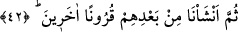
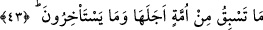
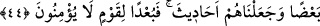

42. Sonra onların ardından başka nesiller getirdik.
“Sonra onların ardından” yâni zikredilen nesillerden sonraki en meşhur görüşe göre
onlar Âd kavmidir “başka nesiller” ki onlar Sâlih, Lût, Şuayb ve diğer peygamberlerin
kavimleridir “getirdik” yarattık. Bunu kudretimizi ortaya koymak, her ümmetin bizim
kendilerinden müstağnî olduğumuzu anlamaları, eğer nebîlerin dâvetini kabul eder ve
rasûllere tâbi olurlarsa, teslim olup boyun eğmelerinin ve tâatleri yerine getirmelerinin
faydasının kendilerine âid olacağını bilmeleri için yaptık.
43. Hiçbir ümmet, ecelini ne öne alabilir, ne de erteleyebilir.
“Hiçbir ümmet ecelini ne öne alabilir.” Helâk olan ümmetlerden hiçbiri helâk
edilmeleri için tâyin edilen zamanı ne ileri alabilir “ne de erteleyebilir” ne de bu
tanınan süreyi bir saat ve göz açıp kapama vakti kadar geciktirebilir. Bilakis kendisi
için belirlenen zaman gelip çatınca ölür ve helâk olur.
44. Sonra biz peyderpey peygamberlerimizi gönderdik. Herhangi bir ümmete
peygamberlerinin geldiği her defasında, onlar bu peygamberi yalanladılar; biz de
onları birbiri ardından yok ettik ve onları ibret hikâyelerine dönüştürdük. Artık
iman etmeyen kavmin canı cehenneme!
“Sonra biz peyderpey” peş peşe, birbiri ardınca “peygamberlerimizi gönderdik.”
“Gönderdik” ifâdesi, (42. âyetteki) “getirdik/yarattık” ifâdesine atfedilmiştir. Fakat bu,
peygamberlerin gönderilmesinin zikredilen nesillerin hepsinin getirilmesinin ardından
ve daha sonra olduğu anlamında değildir. Bilakis her peygamberin gönderilmesinin, o
peygambere mahsus neslin getirilmesinden sonra olduğu anlamındadır. Sanki şöyle
buyrulmuştur: ‘Sonra onların ardından başka nesiller getirdik. Her nesle kendilerinden
onlara özel bir peygamber gönderdik.’
“Herhangi bir ümmete” apaçık delillerle ve tebliğ için kendilerine mahsus
“peygamberlerinin geldiği her defasında, onlar bu peygamberi yalanladılar;” onların
çoğu ona yalan isnâd ettiler. “Andolsun ki, onlardan önce eski milletlerin çoğu
dalâlete düştü.” (es-Sâffât, 71) âyeti buna delildir. Nitekim Bahru’l-ulûm’da böyle